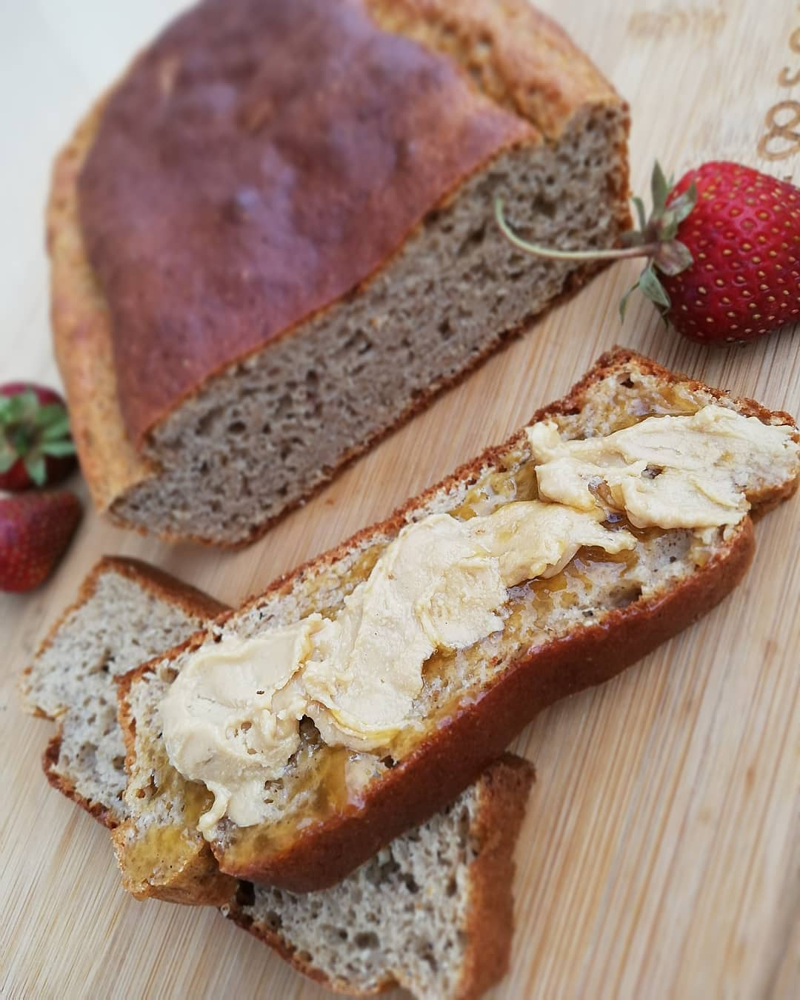

Ovocný chlebíček podľa @hannah._.healthy — Normy Jedál
🍌🥧 Banánový chlebíček 🥧🍌podle @baru_svobb
▪️
Recept jsem malinko upravila:
🍌150g banánu
🍌2 vajíčka (z bílků sníh)
🍌trochu vody na zředění
🍌70g špaldové mouky
🍌30g proteinu (dala jsem vzorek od @aktin skořicový)
🍌2g skořice
🍌30g ovesné mouky
🍌20g kokosové mouky
🍌Prášek do pečiva
▪️
Pečeme na 180° cca 30min
Celý koláček má 865cal
Nejlepší s marmeládou a arašídovým máslem 😉🤤
#pecuzdrave
#zdravasnidane #fitnesspeceni #jimezdrave #bananovychlebicek
#ovocnychlebicek